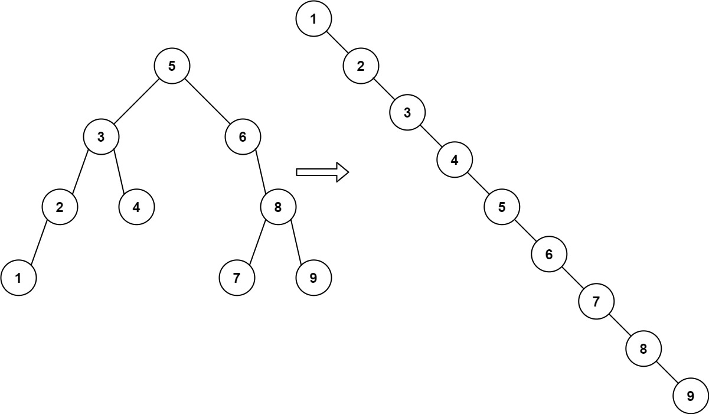
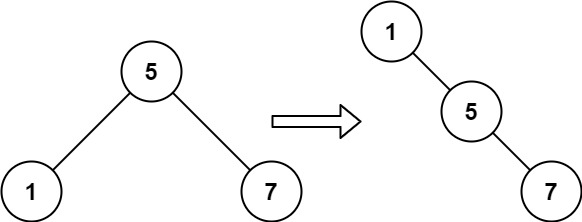

897. 递增顺序搜索树
中序遍历 BST，每访问一个结点就清空它的左指针、接到链尾，遍历完自然成为递增右链。
思路
- 答案就是中序序列串成的链，所以边中序遍历边重排，不用收集再重建。
tail指向已接好的链尾；配哑结点dummy，第一个结点不用特判，答案取dummy.right。- 访问到
node：先清空node.left，再tail.right = node、tail = node。 - 递归先走左子树，所以结点接上链尾的顺序恰好从小到大。
图解
最优解
1class Solution {2 // tail：已经接好的右链的最后一个结点3 private TreeNode tail;4 5 public TreeNode increasingBST(TreeNode root) {6 TreeNode dummy = new TreeNode(0);7 tail = dummy;8 inorder(root);9 return dummy.right;10 }11 12 // 中序遍历：每个结点被访问到时，摘下来接到链尾13 private void inorder(TreeNode node) {14 if (node == null) return;15 inorder(node.left);16 // 中序位置：清空左指针，把 node 接到链尾17 node.left = null;18 tail.right = node;19 tail = node;20 inorder(node.right);21 }22}题目
给你一棵二叉搜索树的 root ，请你 按中序遍历 将其重新排列为一棵递增顺序搜索树，使树中最左边的节点成为树的根节点，并且每个节点没有左子节点，只有一个右子节点。
示例 1：

输入：root = [5,3,6,2,4,null,8,1,null,null,null,7,9] 输出：[1,null,2,null,3,null,4,null,5,null,6,null,7,null,8,null,9]
示例 2：

输入：root = [5,1,7] 输出：[1,null,5,null,7]
提示：
- 树中节点数的取值范围是
[1, 100] 0 <= Node.val <= 1000
题面取自力扣当前版本。
数据快照 2026-11-04。题面版权归力扣所有，本站点仅供本人学习使用，请勿对外发布。